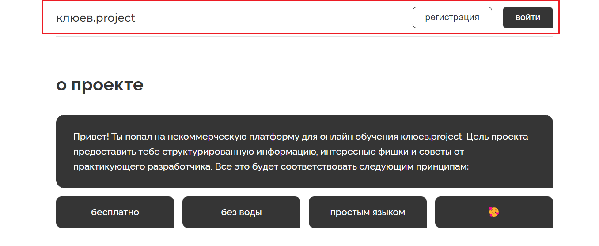
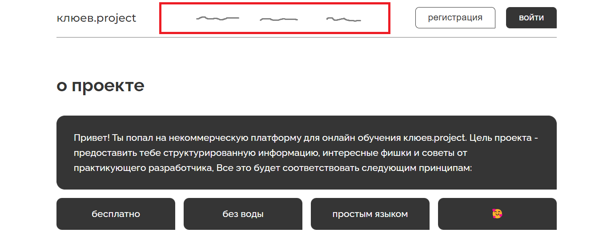
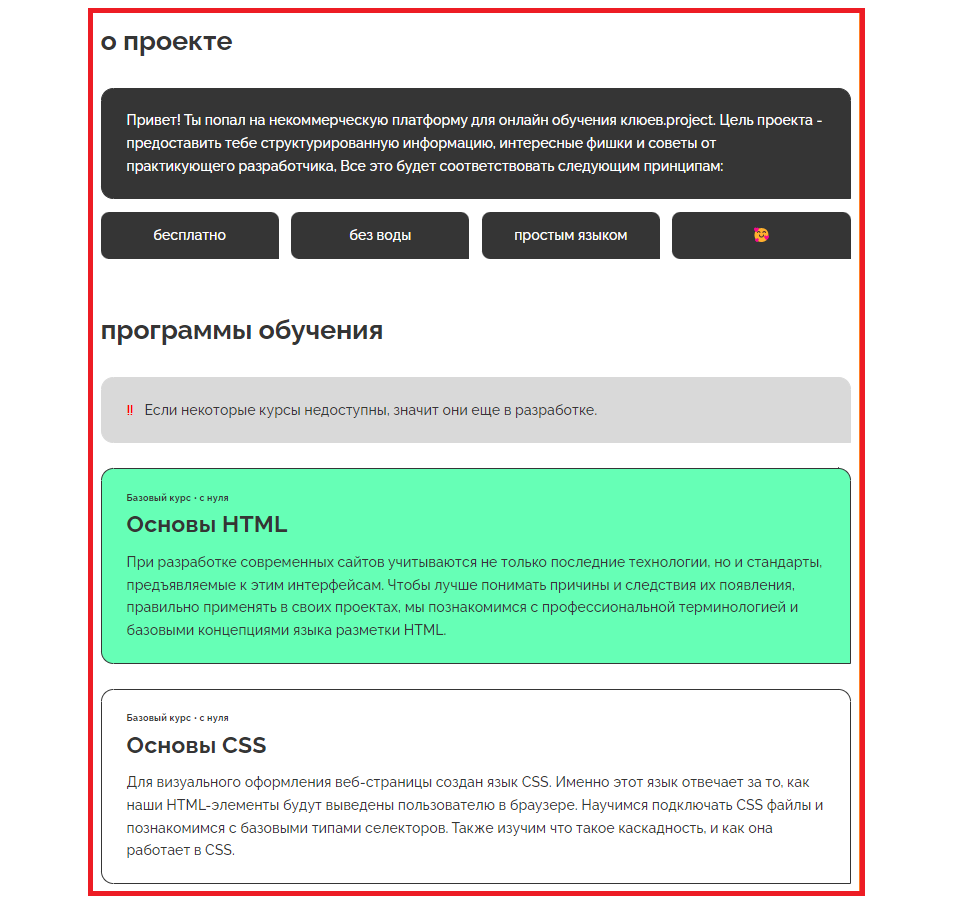
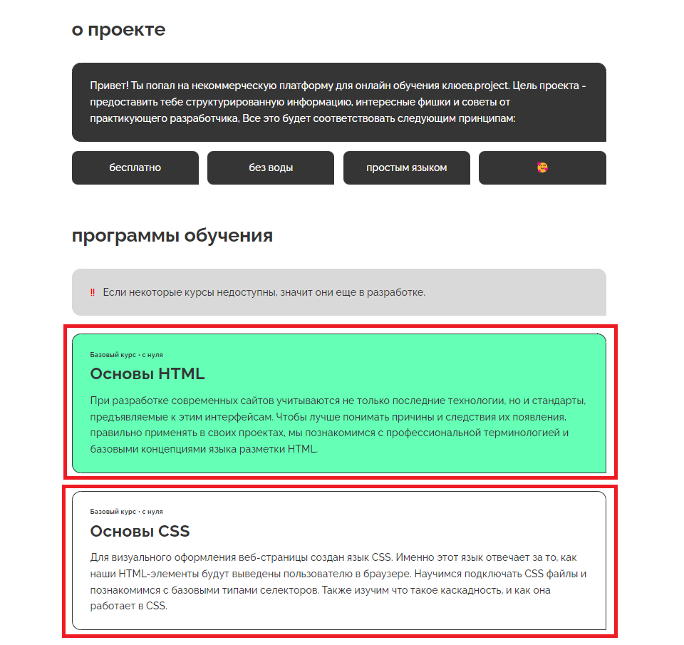

При создании верстки нужно учитывать семантику, то есть смысловое (логическое) значение всех элементов.
Основная цель любой HTML-верстки — передача смысла блоков. Часто помимо пользователей по нашим страницам ходят и роботы. Они собирают и анализируют информацию страницы. К примеру, поисковые роботы просматривают всю страницу и определяют ее полезность, а также уникальность. И если для человека достаточно просто поделить страницу на части и найти шапку, основной контент, футер, то для робота это достаточно сложная задача. Робот видит исключительно нашу верстку и не может «глазами» отделить части макета.
Вторая важная причина необходимости создания семантической верстки — использование страниц людьми с ограниченными возможностями. Слабовидящие пользователи используют «скринридеры» — устройства или приложения, воспроизводящие голосом элементы страницы. Чтобы скринридер мог правильно понять, где содержится основная информация, меню, поясняющие блоки и так далее, мы должны правильно разметить страницу. Это поможет устройствам правильно разбить страницу на логические блоки и дать возможность посетителям корректно перемещаться по странице. Такая концепция называется «Доступный WEB».
Для решения этих вопросов в стандарте HTML5 появилось множество семантических тегов, которыми вы можете пользоваться. В этом уроке изучим базовые семантические теги и разметим целую HTML-страницу.
Верхняя область макета зачастую называется «шапкой» сайта. Она содержит название компании, основное меню, контактную информацию. Эта область очень важна для быстрой навигации по сайту, так как обычно содержит меню с основными разделами сайта.
Чтобы создать шапку сайта, используется парный тег <header>, внутри которого мы и располагаем необходимую информацию.
Пример простенькой шапки сайта:
See the Pen html basics - lesson 4 - header exemple by Vyacheslav (@VyacheslavMaksimovich) on CodePen.
Возможно ты воскликнешь - "Эй, автор, это вовсем не похоже на привычную шапку сайта!" и будешь прав. Правильно оформить шапку нам поможет CSS, но проходить мы его будем в следующем курсе. Сейчас же сосредоточься на изучении разметки, не спеши.
По своему поведению тег <header> работает так же, как и простой <div>,. Почти все семантические элементы являются блочными и не имеют стилей по умолчанию. Это позволяет очень быстро добавить семантику в уже существующие проекты. Если стили в этих проектах не завязаны на тегах, то достаточно просто сменить название с <div> на <header>, и мы получим уже семантичную шапку сайта.
Попробуйте взглянуть на шапку сайта. Что он там видит? Обычно это множество ссылок, логотип, текст и другая информация
Если вы еще не сверстали пару своих макетов, то по такому набору можете и не понять, что набор ссылок не что иное, как основное меню сайта. Вот и роботам не всегда просто это сделать. Конечно, они уже достаточно обучены, чтобы в таком простом наборе найти меню, но меню обычно может быть не одно и быть контекстно-зависимым. Тогда робот может принять за основное меню не то, что бы мы хотели.
Как же нам ему помочь? Для этого в стандарте HTML5 появился тег <span>. Он обозначает навигационную область. Причем помочь отделить основное меню от меню раздела можно с помощью других тегов, речь о которых пойдет ниже.
Заменим простой блочный элемент <div> на его семантичного брата <nav>:
See the Pen html basics - lesson 4 - nav exemple by Vyacheslav (@VyacheslavMaksimovich) on CodePen.
Главной особенностью использования <nav> является то, что не обязательно оборачивать все меню на странице. Обычно достаточно обернуть только главное меню и, например, не оборачивать меню в футере. При этом не запрещается иметь сразу несколько элементов <nav> на странице. Выделяйте ими главные меню на странице.
Основной смысл каждой страницы — уникальный контент. Это самое главное, что должно быть на вашей странице. Пользователь вполне справится без меню или футера, но если на странице нет своего уникального контента, то страница бесполезна.
Для разметки уникального контента в стандарте HTML5 появился специальный тег <main>. Именно он поможет обозначить область с самым важным контентом на странице. Старайтесь в нем держать только контент. Обычно меню, боковые панели и футер в эту область не входят. Исключением может быть только ситуация, если эти блоки действительно уникальны для данной страницы. Например, меню может вести по разделам страницы. В таком случае оно на полных правах может быть включено в область уникального контента.
Добавим такую область в нашу верстку:
See the Pen html basics - lesson 4 - main exemple by Vyacheslav (@VyacheslavMaksimovich) on CodePen.
Наличие тега <main> также очень важно для мобильных браузеров. Вы могли видеть, что многие из них имеют функцию «Режим чтения». При его включении браузер автоматически удалит все оформление и все ненужные блоки, оставив только главный контент. Этим контентом и будет являться область, заключенная в тег <main>. Такой режим отлично подходит для людей, у которых в настоящий момент слабое подключение к интернету.
Так как внутри <main> содержится уникальный контент страницы, то разрешено использовать только один такой тег на странице.
Контент на странице не является однородным. Обычно это цепочка логических областей, каждая из которых описывает что-то конкретное. Например, на странице могут присутствовать область с описанием преимуществ, цены, формы и так далее. Их хочется как-то выделить. И на это есть несколько причин:
Для таких самостоятельных логических единиц существует специальный тег <section>, который внутри себя может содержать одну конкретную секцию. Добавим ее в наш пример:
See the Pen html basics - lesson 4 - main exemple by Vyacheslav (@VyacheslavMaksimovich) on CodePen.
Заметьте, как легко стало искать преимущества в коде, ведь они находятся в отдельной секции. Также вы могли обратить внимание на заголовок внутри секции. Так как секция — это самостоятельная единица, то почти всегда она имеет свой заголовок. Хоть это и не всегда так, и стандарт не обязывает нас включать заголовок в секцию, но старайтесь придерживаться этого правила.
Как быстро определить, стоит ли включать участок контента в отдельную секцию? Все очень просто: если вы можете описать участок контента в одном или двух словах (преимущества, цены, форма заказа, каталог, контакты и так далее), то с большой вероятностью этот участок является самостоятельной секцией.
Другим способом выделить логический участок текста является использование тега <main>. У вас может возникнуть вопрос: «Зачем иметь два различных тега для выделения одного и того же?»
Между <section> и <article> есть одна существенная разница: <article> является независимой секцией, то есть ее можно перенести на любую страницу сайта или даже на другой сайт, и при этом она не потеряет своего контекста.
Представьте себе блог и отдельную статью в нем. Можем ли мы понять статью, если она вдруг окажется не в блоге, а, например, на странице с услугами? Конечно! Ведь статья — это законченный текст. Следовательно, такую статью можно обернуть в тег <article>.
Добавим колонку новостей в наш пример верстки. Сразу подумаем, как она может быть разделена. Сами по себе новости являются достаточно уникальным элементом, ведь даже если их перенести на другую страницу, то они не потеряют свою актуальность. В этом случае каждую новость можно обернуть в <article>. А что делать с оберткой блока? Она объединяет по смыслу несколько различных новостей, ее можно спокойно назвать одним словом, и она точно будет иметь свой заголовок. Следовательно, ей подойдет тег <section>.
See the Pen html basics - lesson 4 - article exemple by Vyacheslav (@VyacheslavMaksimovich) on CodePen.
Создайте файл index.html на своем компьютере и создайте собственное резюме. Используйте изученные в этом уроке теги.